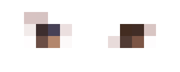

완성 공동 RGB 후보 없음. 제품/Unity/추가 Play0회. 기존 참조를 새로 칠하거나 없는 eyelid/state를 생성하지 않았습니다.

prefab의 GUID가 가리키는 실제 asset을 읽었습니다. 눈마다 iris4/white6, 합계20개 색 texel. 안검 role6은 없습니다. 과거 저장20셀과 전부 동일하며, 현재 GPU Own 경유10표본은 최종 sRGB8에서 모두 일치합니다. 선형float의 차이는 최대.0019122로 별도 기록합니다.
이20개는 현재348에서 부위별 색 공급원입니다. 이것을 그대로 모든 pose의 필수 가시 픽셀 수로 요구하면 안 됩니다. Closed50/100은 native 기하는 있지만 등록된 전체 pixel keyform은 없습니다. native ring/upper arc 데이터는 있으며 실제 하안검으로 확정되지 않은 skin feature6을 새로 승격하지 않았습니다.
조건부로 iris4/white6을 모두 opaque로 보존하고 현재 counts 양수 영역만 허용하면, 두 눈 I/W 합집합6셀에10개를 놓으라는 충돌입니다. white만 보아도6개 요구에4/5셀뿐입니다. 이는 잘못된 가정의 반례이며 픽셀 보정이 불가능하다는 뜻이 아닙니다.
| 과거47 source별 ablation | 완화된 공동 capacity 통과 |
|---|---|
| actual-counts | 0/12 |
| raw-owner-support | 12/12 |
| raw-with-recorded-occluders-no-Classify | 0/12 |
| raw-without-S0-sensitivity-only | 12/12 |
raw geometry 통과는 실제 가시성/연결성/미감 통과가 아닙니다. S0 제거는 원인 구분용이며 채택하지 않습니다. 단순 Classify 제거만으로는 해결되지 않았습니다. 일반 얼굴 underlay와 실제 lid/Close 가림을 구분해야 합니다.
캐시 정체성은 가려져도 보존됩니다. 모든 reference texel을 매번 전부 가시로 강제하는 것과 다릅니다. 공유 opaque 셀에 iris/lid 둘을 동시에 전부 표시하라는52 반례는 그 조건에서만 불가능합니다. source native 부분 가림을 전체0으로 취급하지 않습니다.
기존333의 shared parent/iris 영역과 native closedBoundary를 같은 변형/소유권 경로로 연결해야 합니다. 현재 bank는 복원했지만 authored opening과 native skin opening이 다를 때의 coherent whole-eye 계약은 없습니다. 추가 관측이 필요하면348대입 전 작은 baseline ROI와 S0~S3 개별 표본·S3색/명암, 외부 가림·실제 binding 메타데이터로 좁힙니다. 현재 입력만으로 정확한 전체 합성을 했다고 주장하지 않습니다.
bank·표본·공동 반례·ablation 수치 / 실제 소스 함수/GUID/해시 / 10개 제약 검사 / 가중치 없는 공동 feasibility 함수